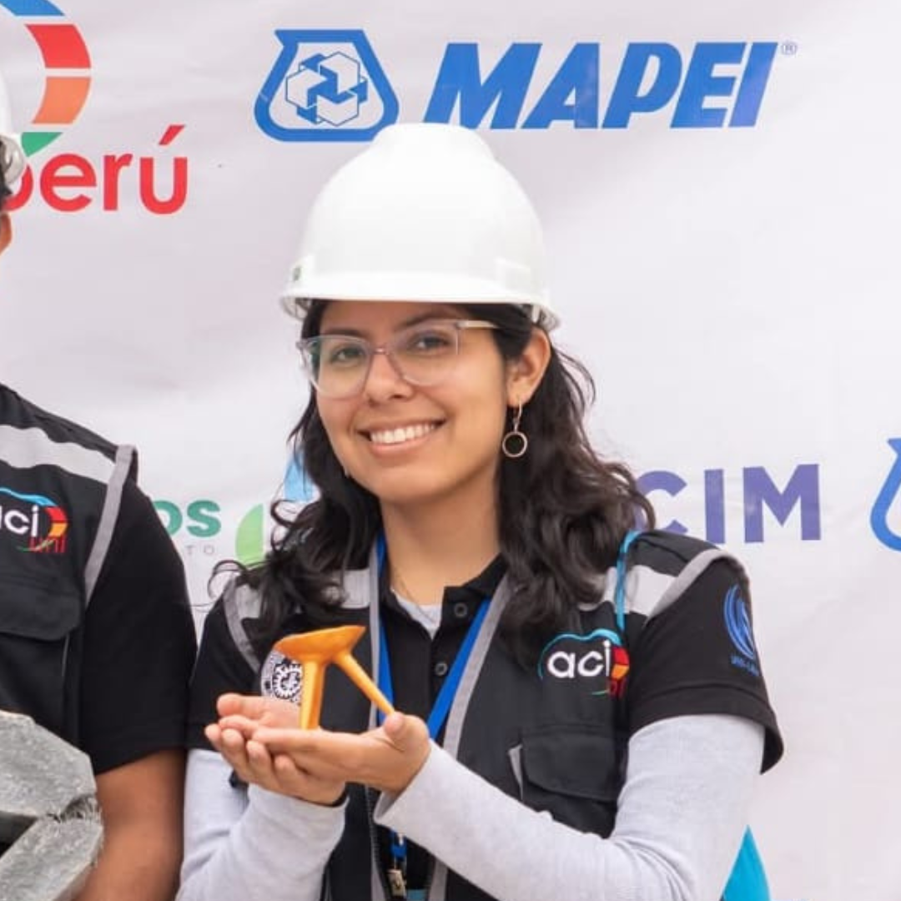

Área de Finanzas
💰 Gestión presupuestaria y control de gastos
Elaboración y monitoreo de presupuestos para eventos, proyectos y operaciones del capítulo, asegurando un uso eficiente de recursos y evitando desviaciones financieras.
🤝 Captación de fondos y patrocinios
Identificación y negociación de alianzas con patrocinadores, empresas y entidades para obtener financiamiento, donaciones y recursos que apoyen las actividades del ACI UNI.
📈 Reportes financieros y auditorías
Generación de informes periódicos de ingresos, egresos y balances, junto con auditorías internas para mantener transparencia y cumplimiento en la gestión económica del capítulo.
📊 Planificación financiera estratégica
Desarrollo de planes a largo plazo para la sostenibilidad económica, incluyendo proyecciones, inversiones y estrategias de ahorro para el crecimiento continuo del capítulo.

Claudia Chira
Directora de Finanzas
Miembros 2025-2
| Nombre | Cargo | |
|---|---|---|
| Sin miembros | Sin miembros |